디바인 아처 경전
원문: Marksmen's Quran · 작성자 Elnath · 2026-11-21에 받은 원문 기준 (글로벌 서버 시즌4) · 맹금 조련사(매활)·야수 조련사(늑활)
스킬·인자·심상의·장비 이름은 한섭 시즌4 클라(1.0.46215)의 한국어 문자열을 글로벌 영어 문자열과 같은 ID로 맞춰 옮겼습니다. 클라에서 이름을 찾지 못한 용어는 처음 한 번 원문을 괄호로 붙였습니다. 수치와 판단은 모두 원작자의 것이며, 글로벌 서버 기준이라 한섭과 시점이 다를 수 있습니다.
소개
와그완 브로(Wagwan Brotha), 저는 OCE 서버의 디바인 아처 Elnath입니다. 시즌 1 중반부터 200핑으로 꾸역꾸역 달려 왔습니다. 지난 시즌에는 마스터 점수 4199를 찍었습니다. 변경 이력(Changelogs)은 꼭 확인해 주십시오.
여기는 디바인 아처 대학이니, 야수 조련사 계열(늑활)과 맹금 조련사 계열(매활) 빌드를 모두 다루겠습니다.
간단하게 가기 위해 스킬 하나하나의 작동 방식이나 클래스 운영법을 전부 설명하는 가이드는 쓰지 않겠습니다. 대신 빌드 최적화에 가장 중요한 것들에 집중하겠습니다.
- 장비
- 어빌리티
- 인자
- 딜사이클
레이드 세트는 자유롭게 고르는 것이 아니라 정해진 대로 쓰는 고정 세트이므로 자세히 다루지 않겠습니다.
심상 매트릭스에 대하여
이번 시즌 디바인 아처를 하실 분들께 솔직하게 말씀드리겠습니다. 새 심상 매트릭스 시스템은 끝까지 올리려면 사실상 페이 투 윈입니다. 매활 빌드 중 하나는 심상 매트릭스가 빌드의 성패를 가르기 때문에, 진지하게 하실 생각이라면 반드시 고려해야 합니다.
그렇다고 해도 디바인 아처가 좋아서 그냥 재미있게 하고 싶으시다면 그것도 전혀 문제없습니다. 게임을 즐기는 데 모든 것을 극한까지 맞출 필요는 없습니다.
이 가이드의 목표는 어떤 빌드 선택지가 있는지 이해하고, 가진 것으로 최대한의 효율을 내도록 돕는 것입니다.
제 가이드에 있는 빌드 중 더 좋은 가이드가 있는 경우에는 그 가이드 링크로 안내해 드리겠습니다.
진짜로요, 브로(Wallahi Brotha)
매활 101(익스플로전 샷 빌드)
익스플로전 샷 빌드는 이미 중국 서버에서 검증된 빌드입니다. 앞에서 심상 매트릭스 레벨 16은 되어야 딜이 제대로 나온다고 말씀드린 빌드가 바로 이것입니다.
이 빌드는 아래 인자 덕분에 익스플로전 샷을 주력 딜 스킬로 쓰는 것이 핵심입니다.
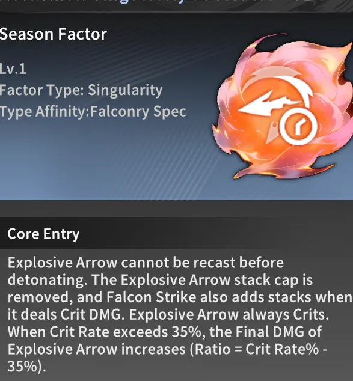
익스플로전 샷 빌드에서 쓰는 스킬:
타수가 더 많으니 화살비를 유지합니다. 아는 사람은 다 압니다. 던전에서 위협 사격이 필요하면 화살비를 위협 사격으로 바꾸기만 하면 됩니다.
어빌리티
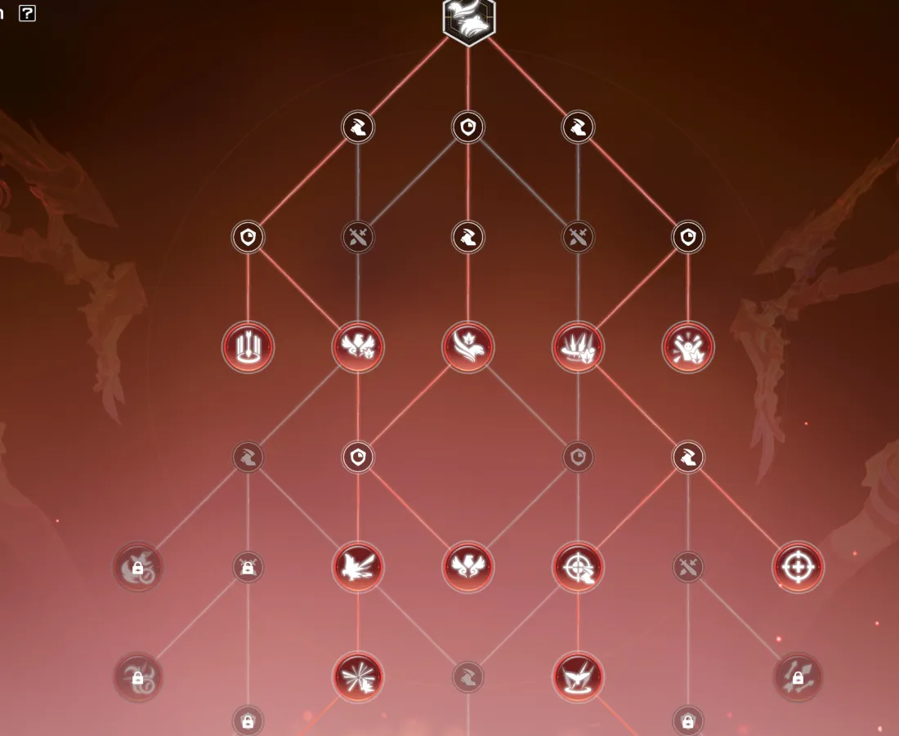
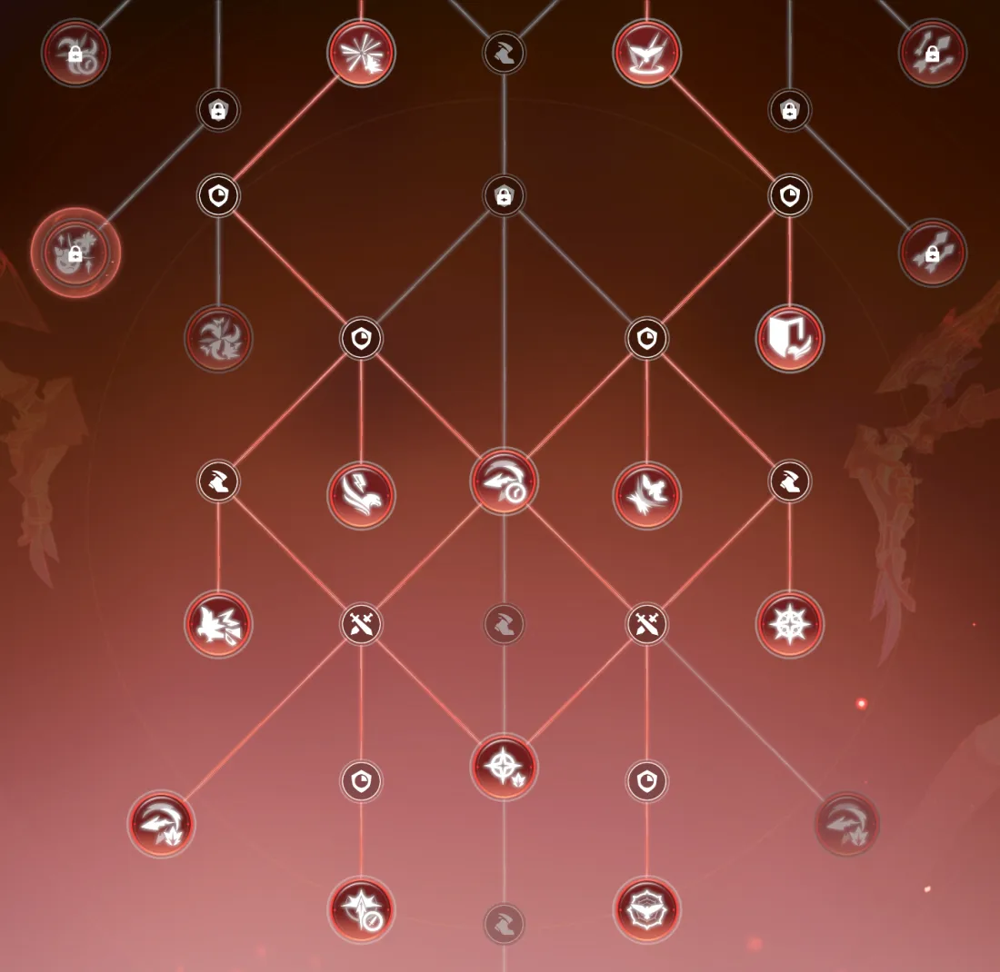
인자/심상의
인자
디바인 아처 특이점 인자 X4 - 폭발 화살이 터지기 전에는 [익스플로전 샷]을 시전할 수 없고, [익스플로전 샷]의 상한이 사라지며, 팔콘 출격으로 얻는 [익스플로전 샷] 충전 획득 속도가 2배가 됩니다. 치명타가 35%를 넘으면 폭발 화살의 최종 대미지가 (치명타 - 35)%만큼 증가합니다. [익스플로전 샷]은 반드시 치명타가 발생합니다.
디바인 아처 영감 인자 X6 - 궁극 스킬을 시전하면 팔콘 한 마리를 추가로 소환하여 10초 동안 지속됩니다.
디바인 아처 영감 인자 X8 - [익스플로전 샷] 시전 후 10초 동안 팔콘의 기원 대미지 +20%. (팔콘 출격, 섬광 돌진, 환영 팔콘)
방어용 안정 인자는 원하는 것을 고르고, 디바인 아처 안정 인자는 X2를 챙깁니다.
심상의
선택지는 스테이터스 하모니와 몽환의 화살비 두 가지입니다.
저는 360 구간에서는 몽환의 화살비가 더 잘 나올 것 같아서 은근히 그쪽으로 기울고 있습니다. 다만 어느 쪽이 최종(BiS)인지 확실히 말하려면 아직 테스트가 더 필요합니다.
대부분은 스테이터스 하모니를 쓸 테니 그것부터 시작하겠습니다.
레벨 10: 하모니・힘찬 악장 선택
레벨 20: 하모니・종장의 메아리 선택
레벨 45: 하모니・강렬한 중주곡 선택
레벨 55: 하모니・퍼펙트 하모니 선택
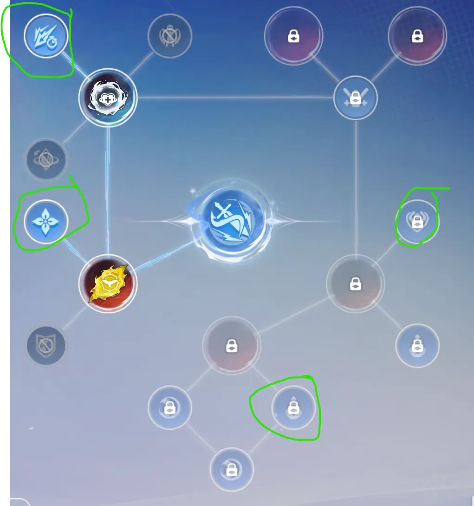
몽환의 화살비 레벨 10: 화살비・치명타 화살 선택
레벨 20: 화살비・화살비 급습 선택
레벨 45: 화살비・화살비의 여운 선택
레벨 55: 화살비・영혼 추적 화살 선택
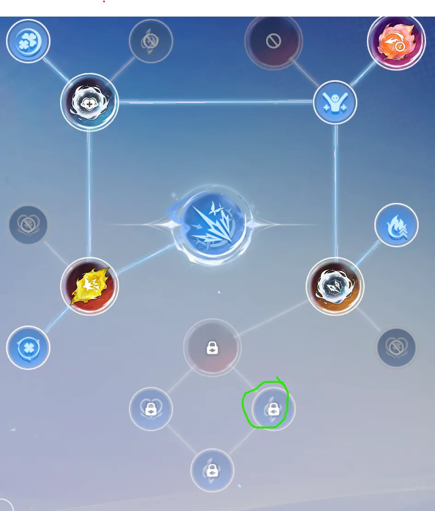
각인
챙길 것:
익스플로전 샷 기원 대미지 증가 10개(정답, Halal). 나머지는 전부 비추(Haram)입니다, 브로.
불멸 옵션은 대미지 증가가 200%인 반면, 에픽 옵션은 보통 13.33%~16.67%, 줄당 평균 약 15%로 10줄을 다 채워도 약 150%에 그치기 때문에 반드시 챙겨야 합니다. 전체적으로 불멸 옵션이 훨씬 강합니다.
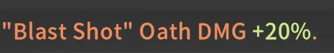
치명타 – 숙련 1개
이 줄은 전체 딜을 올리기 위해 치명타와 숙련을 우선합니다.
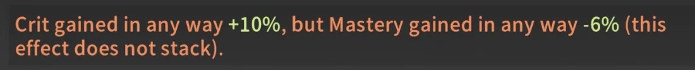
공격력 옵션이 왕입니다 x9
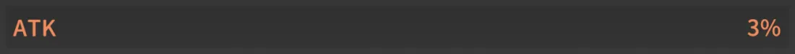
그다음은 빛 원소 공격 x9
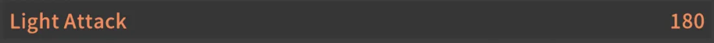
이 부분은 음파 계열 가이드를 쓴 브로에게 감사드립니다.
장비
320·340 장비
치명타 우선
- 치명타를 최대한 많이 챙기고, 목표는 치명타 60%입니다.
- 레이드 세트가 나오면 6세트 효과를 노립니다.
360 장비
목표치
- 치명타: 60%
- 속공: 레이드 세트 포함 36%, 라이트 봄버 최소 9타를 목표로
- 숙련: 약 27%
- 만능: 약 33%
핵심은 숙련과 만능의 균형입니다. 만능은 체감 감소가 덜하므로, 이상적으로는 만능이 숙련보다 5~6% 정도 높게 맞추는 것이 좋습니다.
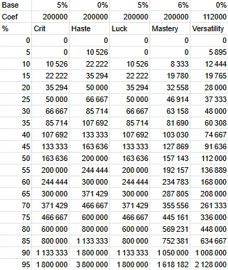
스카이 무기(Sky weapon)
320-340 최종(BiS) 옵션
치명타 6%
숙련 6%
빛 원소 공격 8%
정신 집중 중 물리 증폭 6%
360 최종(BiS) 옵션
치명타 6%
숙련 6%
공격력 8%
정신 집중 중 물리 증폭 6%
이매진
정답(Halal)부터 비추(Haram) 순
320 장비:
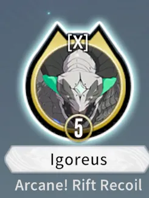
+
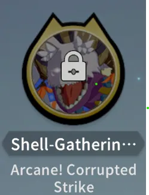
>
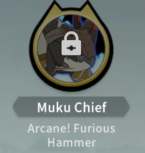
>
340 장비:
+
>
>
360 장비:
+
>
>
모듈
Uzurak 브로에게 감사드립니다.
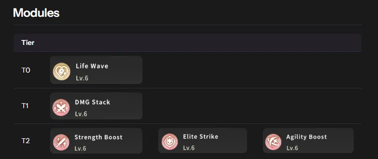
달라진 건 하나도 없습니다, 브로. 늘 그 타령입니다. 다만 레이드 세트에서 치명타 대미지 50%가 빠졌으니 치명타 집중력은 이제 2티어 정도일 겁니다.
딜사이클
중국 서버 딜사이클:
오프닝
이매진 ×2 → 정신 집중 → 라이트 봄버 → 익스플로전 샷 → 궁극 스킬 → 쿼드러플 애로우 → 화살비 → 더블 애로우
조건·팁
- 익스플로전 샷 전에 라이트 봄버: 익스플로전 샷 전에는 항상 라이트 봄버를 씁니다. 둘을 최대한 붙여 써야 딜이 극대화됩니다.
- 익스플로전 샷 타수 극대화: 익스플로전 샷의 딜을 극대화하려면 최대한 많은 타수를 맞혀야 합니다. 이를 위해 익스플로전 샷 지속 시간 동안 쿼드러플 애로우와 화살비가 항상 켜져 있게 합니다.
- 정신 집중 중 라이트 봄버 2회: 정신 집중 한 번에 라이트 봄버 두 번을 넣는 것이 목표입니다.
- 정신 집중 중 익스플로전 샷 3회: 인자를 제대로 갖추면 정신 집중 한 번에 익스플로전 샷 세 번을 넣을 수 있습니다. 레이드 세트 효과로 익스플로전 샷이 라이트 봄버의 쿨타임을 줄여 주기 때문에, 같은 정신 집중 구간에 라이트 봄버 두 번을 넣는 데 중요합니다.
실행 방법:
정신 집중이 준비되기 3~5초 전에 라이트 봄버 → 익스플로전 샷을 씁니다. 정신 집중이 발동하면 익스플로전 샷을 다시 쓰고, 정신 집중 4초쯤에 익스플로전 샷을 한 번 더 씁니다. 마지막으로 정신 집중 10초쯤에 라이트 봄버 → 익스플로전 샷을 다시 씁니다.
정신 집중 전과 도중에 익스플로전 샷을 써서 라이트 봄버의 쿨타임을 줄이고, 같은 구간 안에 라이트 봄버 두 번과 익스플로전 샷 세 번을 밀어 넣는 것이 요점입니다.
| 디바인 아처 - 맹금 조련사 계열 |
|---|
| 2/4: 빛의 의지・쿼드러플 애로우를 시전 시 치명타 대미지 +3%, 10초 지속, 최대 4스택 중첩 가능. |
| 4/4: [정신 집중] 중 [익스플로전 샷]이 폭발할 때마다 소모한 스택 수에 따라 [라이트 봄버]의 쿨타임이 감소합니다. (소모한 스택당 0.5초, 최대 10초.) |
Nyatora 브로에게 감사드립니다.
이제 익스플로전 샷은 타수 상한이 없고, 타수는 라이트 에너지 게이지(Photon gauge)에 표시됩니다. 익스플로전 샷의 6초 동안 많이 맞힐수록 딜이 더 많이 들어갑니다.
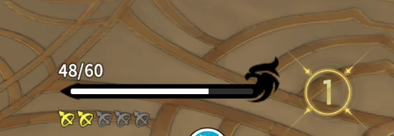
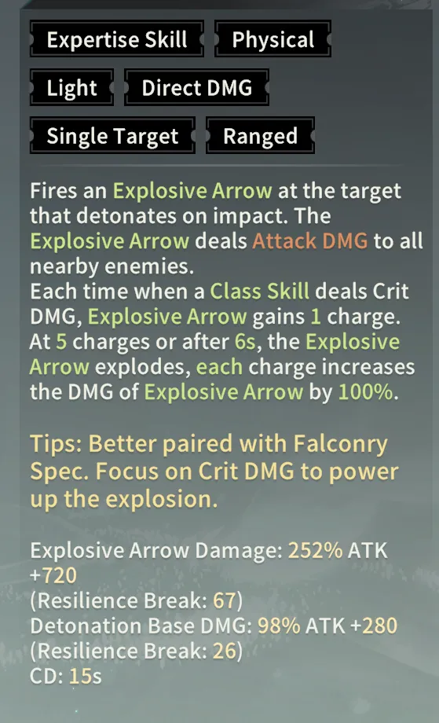
매활 201 (재작성 중)
늑활 101
시즌 3에서 시즌 4로 넘어오면서 늑활(야수 조련사 계열)은 크게 바뀐 게 없습니다. 핵심 목표는 여전히 라이트 리캐스트 가동률 100% 유지입니다. 이 상태가 풀리면 그만큼 딜 손실이 나므로 최대한 오래 유지해야 합니다.
늑활 사용 스킬:
늑활은 어떤 인자를 쓰느냐에 따라 스킬 구성이 두 가지로 나뉩니다.
1:
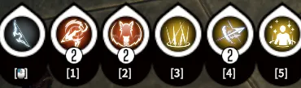
2.
어빌리티
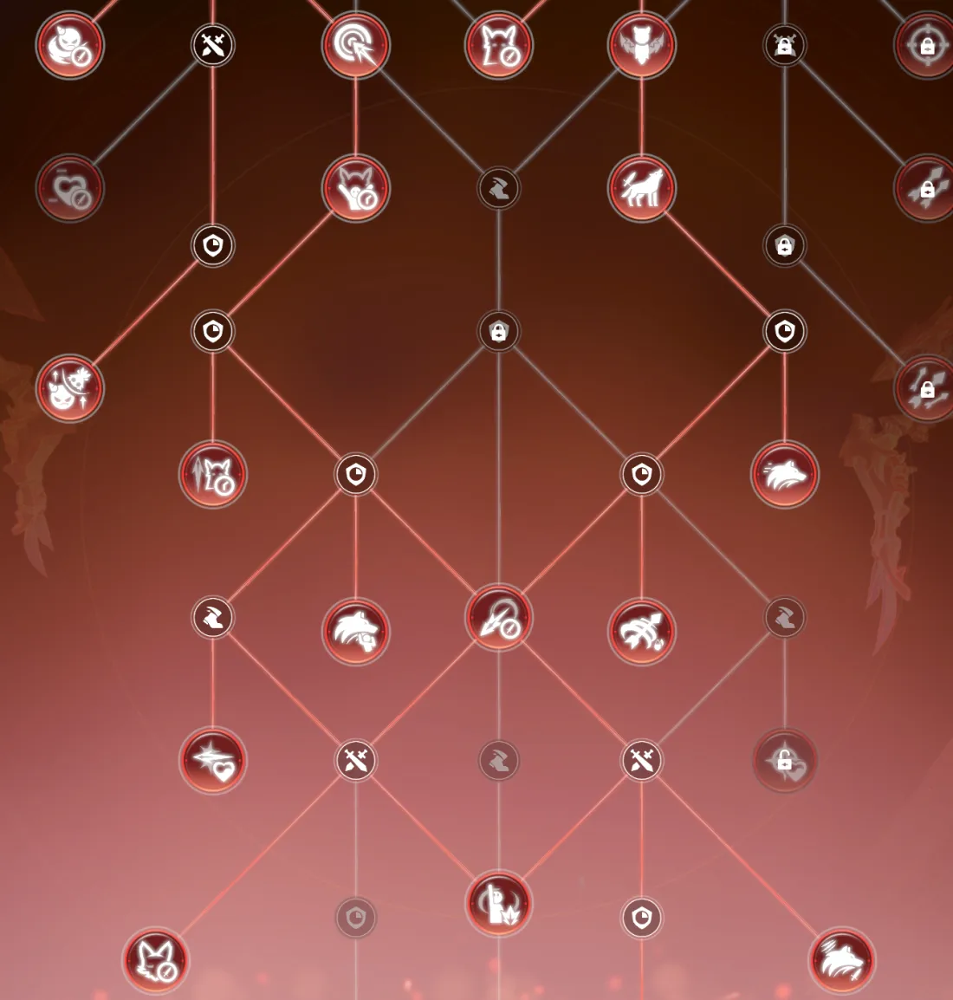
인자/심상의
인자
영감 인자 X4 - 정신 집중 지속 시간 동안 펫 공격 속도가 20% 증가합니다.
영감 인자 X3 - 라이트 에너지가 가득 차면 라이트 에너지 최대치가 40 증가하며 10초 동안 지속됩니다.
특이점 인자는 다음 중에서 고를 수 있습니다.
특이점 인자 X1 - 야생의 부름이 전설의 야수 둘을 모두 소환합니다. (두 스킬 구성 모두 사용 가능)
방어용 안정 인자는 원하는 걸 고르시면 되고, 디바인 아처 안정 인자는 X1을 고르세요.
심상의
축력 폭발
10레벨: 축력・파괴
20레벨: 축력・급습
45레벨: 축력・격동
55레벨: 축력・비축
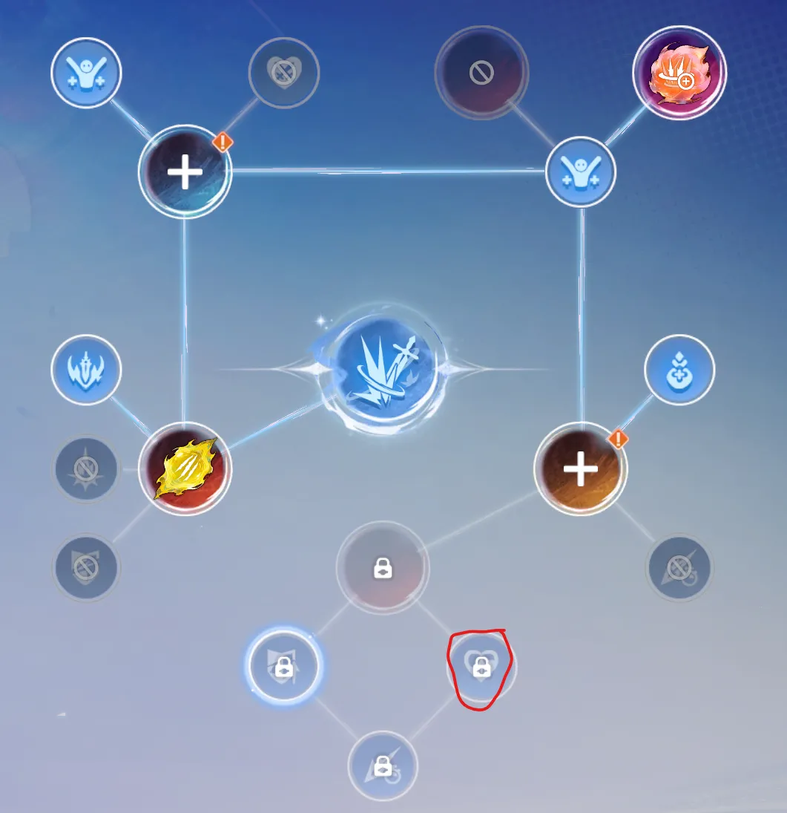
각인
꼬리 휩쓸기 10개
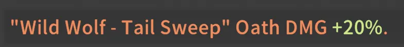
숙련-행운, 속공-치명타 각 1개
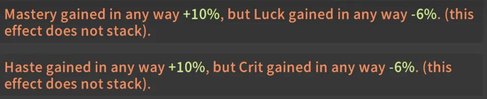
능력치 (순위순):
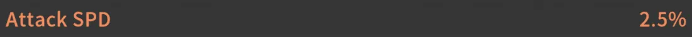
부자분들께 감사를.
장비
장비 320
숙련과 속공을 올리는 데 집중합니다.
- 주 능력치: 속공
- 보조 능력치: 숙련
장비 340
레이드 세트 6세트는 필수입니다.
장신구:
- 귀걸이: 제작 장비 (제작할 수 없다면 숙련 / 만능)
- 목걸이: 속공 / 만능
- 반지: 속공 / 숙련
- 탈리스만: 속공 / 숙련
장비 360
레이드 세트 6세트는 필수입니다.
장신구:
- 귀걸이: 숙련 / 만능
- 목걸이: 만능 / 숙련
- 반지: 숙련 / 속공
- 탈리스만: 숙련 / 만능
능력치 우선순위 & 목표
속공 SSR 이매진을 쓰는 경우:
장비 340·360에서 핵심 목표는 속공 SSR 이매진을 온전히 활용하기 위해 속공 90%를 찍는 것입니다.
- 전투 중 속공 90% 구간에 도달할 때까지는 세 번째 능력치로 속공을 우선합니다.
- 그 구간에 도달했다면 숙련과 만능에 집중하기 시작해도 됩니다.
속공을 굳이 90%까지 끌어올릴 필요는 없습니다. 대신 다음을 목표로 하세요.
- 속공: ~70%
- 숙련: ~55-60% 추정치 -> 최대 65%
- 만능: ~35–45%
장비 360에서는 속공을 불필요하게 몰아주기보다 이 수치들에 맞춰 능력치를 고르게 맞추세요.
스카이 무기(Sky weapon)
최종(BiS) 옵션
숙련 6%
속공 6%
치명타 대미지 15%
물리 증폭 4%
개인적으로는 물리 증폭 4%를 고르겠습니다. 이 게임 번역이 워낙 엉망이라, 물리 증폭 5% 쪽은 전체 대미지가 아니라 펫 대미지에만 적용되는 것 같다고 꽤 확신합니다.
직접 테스트해 본 건 아니라서, 매활 버전의 같은 효과가 어떻게 작동하는지를 보고 추측한 것일 뿐입니다.
이매진
정답(Halal)부터 비추(Haram)까지
장비 320:
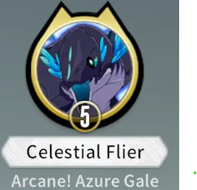
+
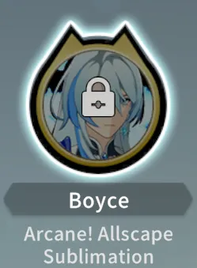
>
장비 340:
+
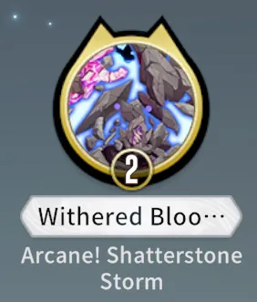
>
>
장비 360 (성스러운 날치 없이 속공 90%를 찍었다면 340에서도):
+
>
>
모듈
생명 파동>> 공격 속도 집중력>대미지 중첩=치명타 집중력>민첩 강화(Agi)>힘 강화(STR)
딜사이클
오프닝
이매진 ×2 → 궁극 스킬 → 정신 집중 → 야생의 부름 x2 → 스톰 애로우·일반 공격 연타, 야생의 부름은 쿨 돌 때마다 사용
딜사이클 규칙
- 이매진 + 정신 집중: 버스트 구간 딜을 극대화하려면 이매진은 항상 정신 집중과 함께 사용하세요.
- 멧돼지 & 독수리 버프 가동률: 멧돼지는 가동률 100%를 유지해야 하고, 독수리는 화살비를 쓰기 전에 반드시 켜져 있어야 합니다. 두 버프 모두 Resonance Log CN(중국판 전투 기록 도구)으로 추적할 수 있습니다. 특이점 인자 ×2(테스트가 필요한 매우 추측성 빌드)를 쓴다면 이 도구로 두 버프를 추적하는 걸 강력히 추천합니다. 아쉽게도 두 버프 아이콘이 똑같아서 어느 쪽이 멧돼지고 어느 쪽이 독수리인지는 직접 기억해야 합니다.
- 화살비 / 빛의 의지・래피드 샷: 라이트 에너지 게이지를 다 쓴 뒤에 화살비나 빛의 의지・래피드 샷을 사용하세요.
- 래피드 샷 모션 캔슬: 래피드 샷을 쓰는 구성이라면 이걸로 기믹을 피할 수 있습니다. 래피드 샷을 발동한 뒤 대시로 모션을 캔슬하면 라이트 에너지 게이지가 잠시 멈춰서, 자리를 옮기는 동안 게이지가 줄어들지 않습니다.
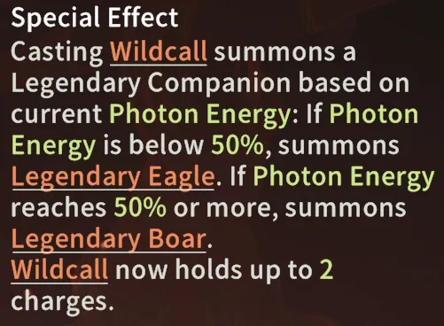
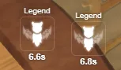
특이점 인자 X1과 X2 운용의 차이.
특이점 인자 X1:
이 인자는 전설의 야수 둘을 모두 소환하게 해 줘서 클래스 난이도가 크게 내려갑니다. 야생의 부름을 쿨 돌 때마다 연타하기만 하면 두 버프 가동률이 거의 100%로 유지되므로 버프를 따로 추적할 필요가 없습니다.
버프 관리를 신경 쓸 필요가 없으니 사실상 뇌 빼고 해도 되는 클래스가 됩니다. 기믹 수행에만 집중하면 됩니다.
특이점 인자 X2:
이 인자는 래피드 샷을 반드시 써야 해서 머리도 더 쓰고 버튼도 더 많이 눌러야 합니다. 중국판 영상과 야생의 부름 쿨 회복 속도를 보면, 전설의 야수 버프 둘 다 가동률 100%를 유지하는 건 불가능하다고 꽤 확신합니다. 즉 둘 중 하나를 우선해야 합니다.
여기서 래피드 샷 / 빛의 의지・래피드 샷이 활약합니다. 핵심 목표는 멧돼지 버프 가동률 100% 유지입니다. 다만 빛의 의지・래피드 샷을 쓸 수 있을 때는 독수리 버프가 잠시 꺼져도 괜찮습니다. 라이트 에너지 게이지를 다시 채우려면 다음 화살비 전까지는 독수리 버프를 다시 켜 두어야 합니다.
이 빌드는 버프 관리가 정말 중요합니다. 버프와 딜사이클을 제대로 관리하지 못하면 성능이 크게 떨어질 수 있습니다. 라이트 에너지 소모 상태(라이트 리캐스트) 밖에서 3–4초 넘게 머무르면 딜 손실이 막대해집니다.
능력치와 대미지 계산
모든 빌드에 공통으로 적용되는 내용이라 따로 한 페이지로 정리했습니다.
고정 방어 능력치 수치는 모두 https://blueprotocol-fan.com/bpsr-damage-formula/ 에서 가져왔습니다.
대미지 계산
대미지 계산의 일반 공식은 다음과 같습니다.
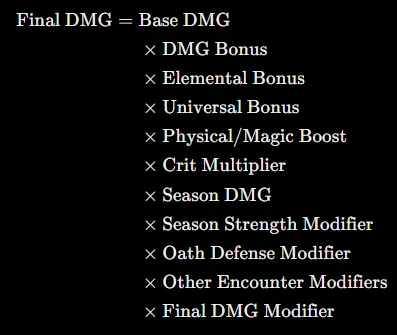
BPSR 시즌 4 – 대미지 계산 공식
1. 기본 대미지 공식
기본 대미지 = (공격력 × 방어 배율 + 정제 물리 공격 + 원소 공격) × 스킬 대미지 계수 + 스킬 고정 대미지
각 항목의 뜻은 다음과 같습니다.
- 공격력(ATK): 고정 공격력, 민첩(AGI) 전환, 공격력% 보너스를 모두 적용한 최종 공격력입니다.
- 방어 배율(DEF Multiplier): 공격력에서 나온 대미지 중 적의 물리 방어력을 뚫고 들어가는 비율을 결정합니다.
- 정제 물리 공격(Refine ATK): 물리 방어 배율의 영향을 받지 않는 추가 대미지 기여분입니다.
- 원소 공격(Elemental ATK): 물리 방어 배율의 영향을 받지 않는 추가 원소 대미지 기여분입니다.
- 스킬 대미지 계수(Skill Damage Coefficient): 스킬의 대미지 배율입니다.
- 스킬 고정 대미지(Skill Fixed Damage): 스킬이 주는 추가 고정 대미지입니다.
2. 방어 배율(데이터마이닝 공식)
데이터마이닝 수치에 따르면 적의 물리 방어력은 다음과 같이 계산됩니다.
방어 감소율(DEF Reduction) = 적 방어력(Enemy DEF) / (적 방어력 + 6,500)
방어 배율 = 1 − 방어 감소율
이 예시에서는 물리 방어력이 2,786인 적을 기준으로 합니다.
물리 방어 무시가 없을 때:
방어 감소율 = 2786 / (2786 + 6500) = 30.00%
방어 배율 = 1 − 0.3000 = 0.7000
즉 공격력에서 나온 대미지 중 70%만 적의 물리 방어력을 뚫고 들어갑니다.
3. 힘 강화 6 모듈 – 물리 방어 무시 18.8%
힘 강화 6 모듈은 물리 방어 무시 18.8%를 주며, 대미지 감소를 계산하기 전에 적의 실질 물리 방어력을 낮춥니다.
1단계 – 적의 실질 방어력 계산:
2786 × (1 − 0.188) = 2262.232 방어력
2단계 – 방어 감소율 재계산:
2262.232 / (2262.232 + 6500) = 25.82%
3단계 – 새 방어 배율 계산:
1 − 0.2582 = 0.7418
4단계 – 대미지 증가율 계산:
(0.7418 / 0.7000 − 1) × 100 = 5.97%
결론: 적의 물리 방어력이 2,786이라고 가정하면, 힘 강화 6 모듈은 대미지 중 공격력에서 나오는 부분을 약 5.97% 늘립니다.
다만 전체 대미지가 5.97% 늘어난다는 뜻은 아닙니다. 이 공식에서 정제 물리 공격과 원소 공격은 물리 방어 배율의 영향을 받지 않기 때문입니다.
또한 힘 강화 6 모듈을 끼면 공격력이 적의 방어력을 더 많이 뚫으므로, 정제 물리 공격·원소 공격에 비해 공격력의 상대적 가치가 올라갑니다.
4. 기타 대미지 배율
기본 대미지를 계산한 뒤, 다음 배율들이 각자의 대미지 분류에 따라 적용됩니다.
- 대미지 보너스(DMG Bonus): 보스 대미지, 엘리트 대미지, 원거리 대미지, 범용 대미지%, 관련 스킬·어빌리티·이매진·모듈 보너스, 그리고 적용되는 적의 받는 대미지 증가 효과.
- 원소 보너스(Elemental Bonus): 빛 원소 대미지%, 모든 원소 대미지%, 시럽 등 해당 원소에 맞는 기타 보너스.
- 만능 보너스(Universal Bonus): 만능 능력치가 대미지 보너스로 환산된 값.
- 물리 증폭(Physical Boost): 물리 증폭%, 물리 증폭 강도, 적용되는 버프.
- 치명타 보정(Crit Modifier): 치명타 확률, 치명타 대미지, 관련 치명타 대미지 버프.
- 시즌 대미지(Season DMG): 시즌 전용 대미지 보너스. 시즌 4의 기원 대미지 효과도 여기에 들어갑니다.
- 시즌 강도(Seasonal Strength): 내 시즌 강도와 적의 시즌 강도 차이.
- 기원 방어(Oath Defense): 적의 기원 방어와 나의 기원 방어 무시.
- 전투 효과(Encounter): 활성화된 경우 결속의 힘(Unity Power)과 격앙의 악장.
- 최종 대미지(Final DMG): 최종 대미지 배율 분류에 명시적으로 속하는 효과.
같은 대미지 분류 안의 보너스는 서로 더해지고, 서로 다른 분류끼리는 곱해질 수 있습니다.
5. 기원 방어 무시
기원 방어 무시가 전혀 없을 때 기원 방어 배율(Oath Defense Multiplier)은 0.7로 가정합니다.
기원 방어 무시가 약 900이면 이 배율은 0.8 정도로 올라갑니다.
대미지 증가율:
(0.8 / 0.7 − 1) × 100 = 14.29%
즉 배율이 0.7에서 0.8로 오른다고 가정하면, 기원 방어 무시 900은 대미지를 약 14.29% 더 늘려 줍니다.
물리 방어 무시와 달리, 기원 방어 무시는 이 대미지 모델에서 별도의 기원 방어 배율에 영향을 줍니다.
6. 중요 사항
- 물리 방어 무시는 최종 대미지 감소율을 직접 깎는 것이 아니라, 적의 물리 방어력 자체를 낮춥니다.
- 이 예시에서 6,500은 방어력 환산 상수이고, 2,786은 적의 물리 방어력입니다.
- 힘 강화 6 모듈은 방어 배율을 개선해 공격력의 효율을 높입니다.
- 가정한 공식에서 정제 물리 공격과 원소 공격은 물리 방어 배율을 무시합니다.
- 기원 방어 무시는 물리 방어 무시와 별개인 배율입니다.
- 기존에 더해지는 대미지 분류에 보너스를 더 추가하면, 해당 능력치 자체에 명시적인 체감 구조가 없더라도 상대적인 효율은 점점 줄어듭니다.
중요: 이 계산은 제공된 데이터마이닝 방어력 수치와 가정한 대미지 공식을 사용합니다. 물리 방어 무시의 정확한 구현 방식, 6,500 환산 상수, 대미지 분류 간 상호작용은 아직 실제 게임 계산과 대조해 검증해야 합니다. 대미지 결과는 적의 방어력, 대미지 분포, 적용되는 버프에 따라서도 달라집니다.
BPSR 시즌 4 – 능력치와 인자 각인 계산
1. 공격력 스케일링 이해하기
이 부분에서는 능력치 스케일링 원리를 설명합니다. 주로 민첩이 공격력으로 어떻게 전환되고, 그것이 전체 대미지에 어떤 영향을 주는지를 다룹니다.
이 계산은 공격력이 핵심 능력치 중 하나인 매활 익스플로전 샷 빌드를 대상으로 합니다.
다른 디바인 아처 빌드에서는 속공이 전체 DPS에서 훨씬 큰 역할을 합니다. 속공은 그런 빌드에서 쿨타임, 공격 속도, 스킬 로테이션 등 여러 부분에 영향을 주기 때문에 정확한 대미지 기여도를 계산하기가 훨씬 복잡해집니다. 그런 빌드는 여기서 다루지 않겠습니다.
대신 계산하기 쉬운 것에 집중하겠습니다. 민첩으로 공격력을 얼마나 얻는지, 그리고 어떤 각인이 이론상 가장 큰 대미지 증가를 주는지입니다.
공격력 계산 공식
최종 공격력(Final ATK) = (기본 공격력(Base ATK) + 0.6 × 민첩(AGI)) × (1 + 공격력%(ATK%))
각 항목의 뜻은 다음과 같습니다.
- 기본 공격력: 무기, 모듈, 기타 적용되는 고정 공격력 출처에서 얻는 공격력입니다.
- 민첩: 민첩 1포인트당 공격력% 배율 적용 전 공격력 0.6을 줍니다.
- 공격력%: 적용되는 출처에서 얻는 공격력 퍼센트 보너스의 합계입니다.
예를 들어 다음과 같이 가정하면:
- 기본 공격력: 1,000
- 민첩: 10,000
- 공격력 보너스(ATK Bonus): 27%
고정 공격력(Flat ATK) = 1,000 + (10,000 × 0.6) = 7,000
최종 공격력 = 7,000 × 1.27 = 8,890
이것이 익스플로전 샷 빌드에서 민첩이 가치 있는 이유입니다. 민첩은 공격력을 직접 줄 뿐 아니라, 민첩으로 얻은 공격력도 공격력 퍼센트 보너스의 혜택을 받습니다.
참고: 이 계산은 민첩 1당 공격력 0.6, 그리고 적용되는 고정 공격력 출처가 모두 같은 공격력% 배율을 받는다고 가정합니다.
2. 기본 대미지 공식 이해하기
각인을 비교하기 전에 공격력, 정제 물리 공격, 빛 원소 공격이 대미지에 어떻게 기여하는지 이해해야 합니다.
이 계산에서는 다음 공식을 사용합니다.
기본 대미지 = (공격력 × 방어 배율 + 정제 물리 공격 + 원소 공격) × 스킬 대미지 계수 + 스킬 고정 대미지
같은 스킬에 영향을 주는 각인끼리 비교하므로, 계산을 다음과 같이 단순화합니다.
기본 대미지 = (공격력 × 방어 배율) + 정제 물리 공격 + 빛 원소 공격(Light ATK)
중요한 점은 공격력은 적의 방어 배율의 영향을 받지만, 정제 물리 공격과 빛 원소 공격은 이 모델에서 따로 더해진다는 것입니다.
즉 공격력을 올려도 최종 대미지가 같은 비율로 늘어나지는 않을 수 있습니다.
2.1 데이터마이닝 방어 공식 이해하기
제공된 데이터마이닝 수치에 따르면 물리 방어 감소율은 다음과 같이 계산됩니다.
방어 감소율 = 적 방어력 / (적 방어력 + 6,500)
방어 배율 = 1 − 방어 감소율
각 항목의 뜻은 다음과 같습니다.
- 적 방어력: 적의 물리 방어 수치입니다.
- 6,500: 이 계산에 쓰는 방어력 환산 상수입니다.
- 방어 감소율: 공격력에서 나온 대미지 중 적이 경감하는 비율입니다.
- 방어 배율: 공격력에서 나온 대미지 중 적의 방어를 뚫고 들어가는 비율입니다.
이 예시에서는 적의 물리 방어력을 2,786으로 가정합니다.
물리 방어 무시가 없을 때:
방어 감소율 = 2,786 / (2,786 + 6,500)
방어 감소율 = 30.002%
방어 배율 = 1 − 0.30002
방어 배율 = 0.69998 ≈ 0.7000
즉 공격력에서 나온 대미지 중 약 70%가 적의 물리 방어력을 뚫고 들어갑니다.
2.2 힘 강화 6 모듈 – 물리 방어 무시 18.8%
힘 강화 6 모듈은 물리 방어 무시 18.8%를 줍니다.
가정한 공식에서 물리 방어 무시는 대미지 감소를 계산하기 전에 적의 물리 방어 수치를 낮춥니다.
1단계 – 적의 실질 방어력 계산:
2,786 × (1 − 0.188) = 2,262.232 방어력
2단계 – 방어 감소율 재계산:
2,262.232 / (2,262.232 + 6,500)
방어 감소율 = 25.818%
3단계 – 새 방어 배율 계산:
1 − 0.25818 = 0.74182
4단계 – 대미지 증가율 계산:
(0.74182 / 0.69998 − 1) × 100
대미지 증가율(Damage Increase) = 5.98%
방어 배율 비교
| 항목 | 힘 강화 6 없음 | 힘 강화 6 있음 |
|---|---|---|
| 적 물리 방어력 | 2,786 | 2,262.232 |
| 방어 감소율 | 30.00% | 25.82% |
| 방어 배율 | 0.7000 | 0.7418 |
| 공격력 유래 대미지 증가 | — | +5.98% |
중요: 힘 강화 6 모듈은 방어의 영향을 받는 공격력 기여분을 약 5.98% 늘리는 것이지, 전체 대미지 출력을 반드시 그만큼 늘리는 것은 아닙니다.
가정한 공식에서 정제 물리 공격과 빛 원소 공격은 물리 방어 배율의 영향을 받지 않기 때문입니다.
그래도 힘 강화 6 모듈을 끼면 공격력이 적의 방어를 더 많이 뚫으므로, 정제 물리 공격·빛 원소 공격에 비해 공격력의 가치가 올라갑니다.
3. 각인별 대미지 상승량 비교
방어력 공식을 이해했으니 이제 각 각인이 대미지를 얼마나 올려 주는지 비교할 수 있습니다.
비교에 사용한 능력치
- 고정 공격력(기본 공격력 + 0.6 × 민첩): 9,000
- 정제 물리 공격: 772
- 빛 원소 공격: 115
- 물리 방어 무시: 0%
- 기원 방어 무시: 0
- 적 물리 방어력: 2,786
- 방어력 계수 상수: 6,500
- 방어 배율: 0.69998
계산을 단순하게 하려고 27% 공격력 각인을 더하기 전 공격력을 9,000으로 두었고, 이 비교에는 다른 합연산 공격력% 보너스를 넣지 않았습니다.
기본 대미지 계산
기본 대미지 = (9,000 × 0.69998) + 772 + 115
기본 대미지 ≈ 7,186.81
이 값을 기준으로 각 각인이 대미지를 얼마나 더해 주는지 계산합니다.
3.1 – 27% 공격력
27% 공격력 각인은 적의 방어 배율이 적용되기 전에 공격력을 올립니다.
추가 대미지:
9,000 × 0.27 × 0.69998 = 1,700.95
대미지 증가율:
1,700.95 / 7,186.81 × 100 = 23.67%
각인이 공격력을 27% 올려 주는데도 실제 대미지 증가율이 23.67%에 그치는 이유는 정제 물리 공격과 빛 원소 공격이 이 공격력 증가의 혜택을 받지 않은 채 기본 대미지에 들어가기 때문입니다.
3.2 – 1,620 빛 원소 공격
일반 공격력과 달리 빛 원소 공격은 이 단순화한 공식에서 방어 배율 적용 뒤에 따로 더해집니다.
대미지 증가율:
1,620 / 7,186.81 × 100 = 22.54%
고정 공격력 9,000에서는 27% 공격력 각인이 1,620 빛 원소 공격보다 조금 앞섭니다.
하지만 이 결과는 보유한 공격력과 물리 방어 무시 수치에 따라 달라집니다.
3.3 – 135% 정제 물리 공격
이 각인은 기존 정제 물리 공격을 135% 올려 줍니다.
추가 대미지:
772 × 1.35 = 1,042.2
대미지 증가율:
1,042.2 / 7,186.81 × 100 = 14.50%
정제 물리 공격은 기존 정제 물리 공격 수치가 높을수록 가치가 커집니다.
하지만 정제 물리 공격 772에서는 공격력%와 빛 원소 공격 둘 다에 밀립니다.
3.4 – 900 기원 방어 무시
기원 방어 무시는 기본 대미지를 직접 올리는 대신 적의 실효 기원 방어를 낮추기 때문에 작동 방식이 다릅니다.
이 계산에서는 다음과 같이 가정합니다.
- 기원 방어 계수 상수: 5,000
- 적 기원 방어: 2,142
- 현재 기원 방어 무시: 0
기원 방어 무시 적용 전:
기원 방어 배율 = 5,000 / (5,000 + 2,142)
기원 방어 배율 = 0.7001
기원 방어 무시 900 추가 후:
기원 방어 배율 = 5,000 / (5,000 + 2,142 − 900)
기원 방어 배율 = 0.8010
대미지 증가율:
(0.8010 / 0.7001 − 1) × 100 = 14.42%
이 가정에서는 기원 방어 무시 900이 대미지를 약 14.42% 더 올려 줍니다.
이 값은 적의 기원 방어와 이미 보유한 기원 방어 무시에 따라 달라진다는 점을 기억해 두십시오.
이 계산은 비교 대상인 모든 대미지에 기원 방어 배율이 적용된다고 가정합니다.
3.5 – 27% 기원 대미지
기원 대미지는 기존 기원 대미지 보너스와, 내 대미지 중 얼마만큼이 그 보너스를 받는지에 따라 가치가 달라지므로 조금 더 복잡합니다.
하나하나 계산하기 귀찮은 변수도 몇 가지 더 있어서, 그럴듯한 이론상 비교가 되도록 단순화하겠습니다.
이 예시에서는 다음과 같이 가정합니다.
- 익스플로전 샷: 기원 보너스 적용 전 대미지의 60%
- 기타 스킬: 기원 보너스 적용 전 대미지의 40%
- 익스플로전 샷 기원 대미지 보너스: 200%
- 기타 스킬 기원 대미지 보너스: 0%
현재 가중 기원 대미지 배율:
(3 × 0.6) + (1 × 0.4) = 2.20
27% 기원 대미지 추가 후:
(3.27 × 0.6) + (1.27 × 0.4) = 2.47
대미지 증가율:
(2.47 / 2.20 − 1) × 100 = 12.27%
여기서 중요한 점은 기존 합연산 기원 대미지 보너스가 커질수록 기원 대미지의 상대적 효율이 체감한다는 것입니다.
익스플로전 샷은 이미 기원 대미지 보너스를 200%나 받고 있으므로, 27%를 더 얹어도 기원 대미지 보너스가 없는 스킬에 얹을 때만큼 상대적으로 오르지 않습니다.
중요: 이 계산은 60/40 비율이 기원 보너스 적용 전 대미지 기준이라고 가정합니다. 익스플로전 샷이 이미 최종 DPS의 60%를 차지한다면 결과가 달라집니다.
4. 각인 종합 순위
위의 능력치와 가정을 적용한 이론상 대미지 상승량은 다음과 같습니다.
| 순위 | 각인 | 대미지 증가율 |
|---|---|---|
| 1 | 27% 공격력 | 23.67% |
| 2 | 1,620 빛 원소 공격 | 22.54% |
| 3 | 135% 정제 물리 공격 | 14.50% |
| 4 | 900 기원 방어 무시 | 14.42% |
| 5 | 27% 기원 대미지 | 12.27% |
고정 공격력 9,000에서는 27% 공격력이 앞섭니다.
하지만 이 순위가 모든 경우에 통하지는 않습니다. 고정 공격력, 물리 방어 무시, 정제 물리 공격, 기존 기원 보너스, 적의 방어 수치가 모두 어떤 각인이 가장 좋은지에 영향을 줍니다.
이 값들은 이론상 대미지 상승량이며 인게임 DPS 증가를 보장하지 않습니다.
5. 능력치에 따라 달라지는 각인 가치
한 가지 능력치 조합으로 각인을 비교해 보았으니, 이제 능력치를 바꾸면 결과가 어떻게 달라지는지 보겠습니다.
계산을 단순하게 하려고 처음 비교에서 가장 강했던 두 선택지인 27% 공격력과 1,620 빛 원소 공격만 다룹니다.
시나리오 1 – 힘 강화 6 모듈 추가(물리 방어 무시 18.8%)
힘 강화 6 모듈은 물리 방어 무시 18.8%를 줍니다.
수정한 방어력 공식을 적용하면 다음과 같습니다.
적 실효 방어력:
2,786 × (1 − 0.188) = 2,262.232
새 방어 배율:
1 − [2,262.232 / (2,262.232 + 6,500)]
방어 배율 = 0.74182
새 기본 대미지:
(9,000 × 0.74182) + 772 + 115
기본 대미지 ≈ 7,563.38
27% 공격력
추가 대미지:
9,000 × 0.27 × 0.74182 = 1,802.62
대미지 증가율:
1,802.62 / 7,563.38 × 100 = 23.83%
1,620 빛 원소 공격
대미지 증가율:
1,620 / 7,563.38 × 100 = 21.42%
비교
| 각인 | 힘 강화 6 없음 | 힘 강화 6 있음 |
|---|---|---|
| 27% 공격력 | 23.67% | 23.83% |
| 1,620 빛 원소 공격 | 22.54% | 21.42% |
| 차이 | 1.13%p | 2.41%p |
이 결과가 말해 주는 것은 무엇일까요?
물리 방어 무시가 높아질수록 공격력%가 빛 원소 공격보다 상대적으로 가치가 커집니다.
공격력이 적의 방어를 더 많이 뚫고 들어가는 반면, 추가된 빛 원소 공격은 이 공식에서 그대로이기 때문입니다.
다시 말해 힘 강화 6 모듈이 있으면 27% 공격력 각인이 1,620 빛 원소 공격보다 한층 더 강해집니다.
다만 이전 계산과 달리 실제 방어 배율은 0.7564가 아니라 0.7418까지만 오릅니다.
즉 힘 강화 6으로 공격력이 얻는 이득은 처음 계산했던 것보다 조금 작습니다.
시나리오 2 – 고정 공격력을 8,000으로 낮춤
이번에는 물리 방어 무시가 전혀 없고 고정 공격력이 9,000에서 8,000으로 떨어졌다고 가정합니다.
새 기본 대미지:
(8,000 × 0.69998) + 772 + 115
기본 대미지 ≈ 6,486.83
27% 공격력
추가 대미지:
8,000 × 0.27 × 0.69998 = 1,511.95
대미지 증가율:
1,511.95 / 6,486.83 × 100 = 23.31%
1,620 빛 원소 공격
대미지 증가율:
1,620 / 6,486.83 × 100 = 24.97%
이 결과가 말해 주는 것은 무엇일까요?
물리 방어 무시 없이 고정 공격력 8,000이면 1,620 빛 원소 공격이 오히려 27% 공격력보다 앞섭니다.
공격력%는 이미 가진 공격력에 비례해 오르는 반면, 1,620 빛 원소 공격 각인은 기존 공격력과 상관없이 고정된 양을 주기 때문입니다.
공격력이 낮을수록 고정 빛 원소 공격의 경쟁력이 올라갑니다.
6. 공격력 손익분기점 찾기
공격력%의 가치는 기존 공격력에 달려 있으므로, 27% 공격력이 1,620 빛 원소 공격을 앞지르려면 공격력이 얼마나 필요한지 계산할 수 있습니다.
손익분기점 공식
필요 고정 공격력 = 빛 원소 공격 / (공격력% × 방어 배율)
이 단순화한 공식은 27% 공격력 각인이 비교 대상 고정 공격력 값의 27%를 추가로 준다고 가정합니다.
6.1 물리 방어 무시 없음
방어 배율 = 0.69998
1,620 / (0.27 × 0.69998)
필요 고정 공격력 ≈ 8,572
즉 다음과 같습니다.
- 공격력 8,572 미만: 1,620 빛 원소 공격이 이깁니다.
- 공격력 8,572 초과: 27% 공격력이 이깁니다.
- 공격력 약 8,572: 둘의 대미지가 거의 같습니다.
6.2 힘 강화 6 모듈 사용(물리 방어 무시 18.8%)
방어 배율 = 0.74182
1,620 / (0.27 × 0.74182)
필요 고정 공격력 ≈ 8,088
힘 강화 6 모듈이 있으면 고정 공격력이 약 8,088만 되어도 27% 공격력이 더 나은 선택이 됩니다.
6.3 손익분기점 비교
| 물리 방어 무시 | 방어 배율 | 공격력 손익분기점 |
|---|---|---|
| 0% | 0.7000 | 8,572 |
| 18.8%(힘 강화 6) | 0.7418 | 8,088 |
물리 방어 무시가 높을수록 27% 공격력이 1,620 빛 원소 공격을 앞지르는 데 필요한 고정 공격력이 줄어듭니다.
이전 계산에서는 힘 강화 6이 손익분기점을 공격력 약 7,933까지 낮춘다고 보았습니다.
하지만 수정한 방어력 공식을 쓰면 이 가정에서의 올바른 값은 공격력 약 8,088입니다.
고정 공격력으로 약 155 차이입니다.
중요: 이 손익분기점 값은 공격력 각인이 명시된 고정 공격력 값의 27%를 더한다고 가정합니다. 기존 합연산 공격력% 보너스가 있으면 비교 결과가 달라질 수 있으며, 특히 퍼센트 보너스 적용 전 고정 공격력이 아니라 화면에 표시되는 최종 공격력을 쓰는 경우에 그렇습니다.
7. 최종 정리
이 계산들의 요점은 모두에게 통하는 최고의 각인 하나가 있는 게 아니라, 각인 가치가 캐릭터 능력치에 따라 달라진다는 것을 보여 주는 데 있습니다.
여기서 가져가야 할 내용은 다음과 같습니다.
- 고정 공격력이 높을수록: 공격력% 각인의 가치가 커집니다.
- 물리 방어 무시가 높을수록: 공격력%가 빛 원소 공격보다 상대적으로 강해집니다.
- 고정 공격력이 낮을수록: 고정 빛 원소 공격의 경쟁력이 올라갑니다.
- 정제 물리 공격이 높을수록: 정제 물리 공격% 각인의 가치가 커집니다.
- 기존 공격력% 보너스: 합연산으로 쌓일 경우 공격력%를 더 얹는 상대적 이득이 줄어들 수 있습니다.
- 기존 기원 대미지 보너스: 합연산으로 쌓일 경우 기원 대미지를 더 얹는 상대적 이득이 줄어듭니다.
- 기원 방어 무시: 적의 기원 방어와 이미 보유한 방어 무시 수치에 따라 달라집니다.
가장 중요한 결론
1. 힘 강화 6은 대미지를 18.8% 올려 주지 않습니다.
물리 방어력 2,786인 적을 상대로 힘 강화 6은 방어력 영향을 받는 공격력 기여분을 약 5.98% 올립니다.
2. 힘 강화 6은 공격력%의 가치를 높입니다.
물리 방어 무시가 적의 물리 방어력을 낮추므로 공격력이 대미지에 더 많이 기여합니다.
그래서 이 단순화한 모델에서 물리 방어 배율의 영향을 받지 않는 빛 원소 공격과 정제 물리 공격보다 공격력%가 유리해집니다.
3. 공격력 손익분기점은 물리 방어 무시에 따라 바뀝니다.
- 힘 강화 6 없음: 고정 공격력 약 8,572.
- 힘 강화 6 있음: 고정 공격력 약 8,088.
이 가정에서는 이 값을 넘으면 27% 공격력 각인이 1,620 빛 원소 공격을 이깁니다.
4. 공격력은 매우 강하지만 모든 상황에서 자동으로 최종(BiS) 선택이 되지는 않습니다.
고정 공격력 9,000에서는 27% 공격력이 1위입니다.
하지만 물리 방어 무시 없이 고정 공격력 8,000이면 1,620 빛 원소 공격이 더 나은 선택이 됩니다.
매활 익스플로전 샷 빌드에서 목표는 단순히 서류상 가장 강해 보이는 각인을 쌓는 것이 아닙니다. 각 능력치가 기존 능력치와 어떻게 맞물리는지 이해하고 실제 대미지 상승량이 가장 큰 각인을 고르는 것입니다.
중요: 모든 계산은 주어진 방어력 값 2,786과 6,500을 쓰고 물리 방어 무시가 적 방어력을 직접 낮춘다고 가정한 단순화 대미지 모델을 사용합니다. 이 값들과 실제 적용 방식은 여기서 따로 검증하지 않았습니다. 실제 결과는 적의 방어 수치, 대미지 분포, 기존 버프와 그 밖의 인게임 메커니즘에 따라 달라질 수 있습니다.
변경 기록
- 18/10 갱신: 모든 빌드(익스플로전 샷, 차지 샷, 늑활)의 인자 각인 최종(BiS) 구성 갱신.
- 18/10 추가: 어떤 능력치·대미지가 좋은지 판단하는 데 도움이 되도록 능력치·대미지 계산 추가
- 18/10 갱신: 익스플로전 샷 어빌리티 페이지에 빛 원소 대미지 어빌리티 추가
- 20/10 갱신: 차지 샷 빌드 능력치
- 4/11 갱신: 늑활 어빌리티와 늑활 각인
- 5/11 갱신: 중국 서버 M20 클리어 영상을 보고 늑활 각인 수정 -> 그냥 이중 소환으로 하십시오, 그게 더 쉽습니다. 시험 삼아 특이점 X2로 해 볼 수도 있고 안 할 수도 있습니다(특이점 X2는 추측 단계입니다).
- 6/11 갱신: 늑활 능력치, 늑활 어빌리티, 늑활 인자
- 10/11 갱신: 늑활 인자 각인